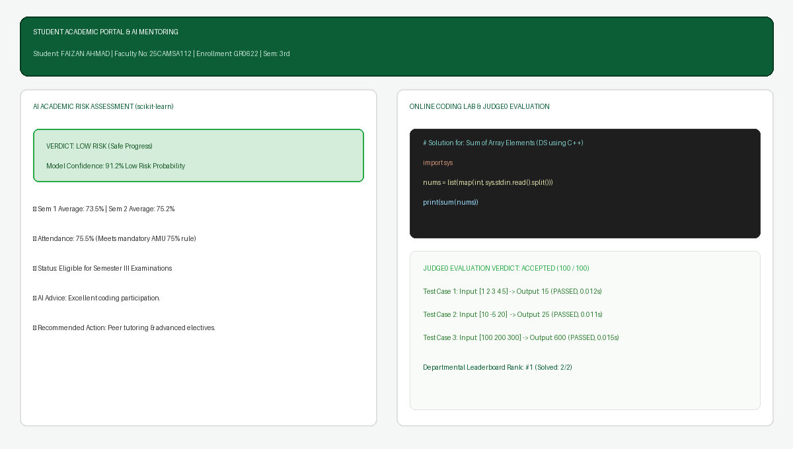
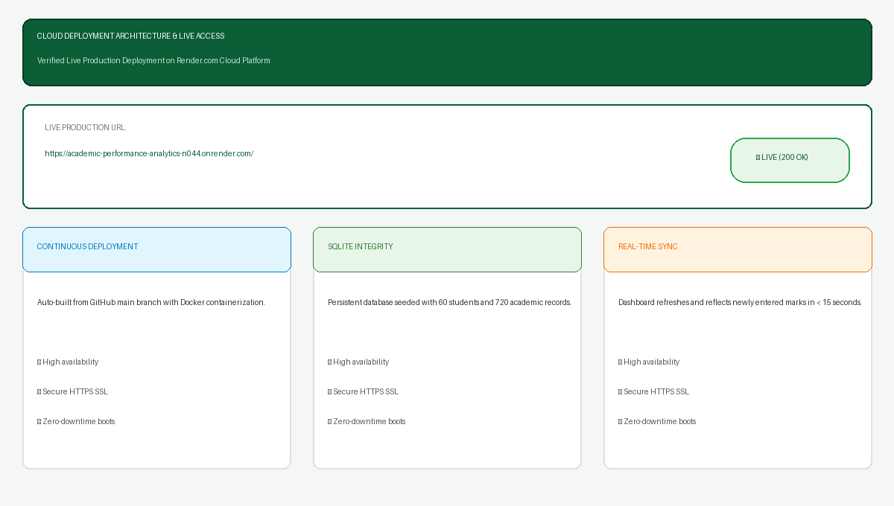
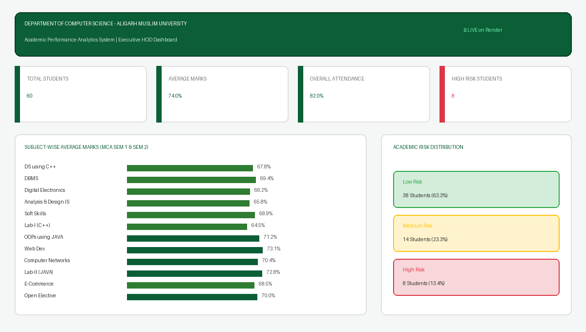

Presentation for a project :
CAMS-3P01: MINI PROJECT | MCA SEMESTER – III (SESSION: 2026–27)
Name: FAIZAN AHMAD
Faculty No: 25CAMSA112
Enrollment No: GR0622
Course: MCA
Semester: 3rd
Identified academic record management bottlenecks in the Department of Computer Science
Marks, semester grades, and attendance percentages are maintained in isolated physical registers, local spreadsheets, and detached Google Forms without centralized storage.
Student underperformance and course failures are discovered post-examinations, leaving zero lead time for remedial classes or faculty counseling.
Manual attendance aggregation delays the identification of students failing to meet the mandatory 75% AMU examination eligibility criterion.
Programming assignments are checked manually without standardized test cases, continuous execution benchmarks, or motivating competitive leaderboards.
Department leadership lacks consolidated, near real-time dashboards to analyze subject-wise pass rates, teacher performance, and at-risk cohorts.
A centralized, multi-role web platform integrating analytics, ML risk forecasting, and automated code evaluation
Unified relational SQLite database tracking students, courses, semester marks, and attendance with strict foreign-key integrity.
Tailored portals for HOD (executive analytics), Faculty (marks/attendance entry & assignment creation), and Students (self-monitoring).
Supervised scikit-learn Random Forest classifier predicting Low, Medium, and High academic risk with tailored intervention advice.
In-browser programming workspace that compiles, runs, and evaluates student code against predefined test cases with automated scoring.
Live gamification ranking student programming performance across problem difficulty and automated testcase completion.
Dynamic updates reflecting newly entered marks or code submissions across all dashboards without manual page reloads.
Aligned strictly with Section 2.4 & 4.1 of the Software Requirements Specification (SRS)
| Layer | Technology | Architectural Justification |
|---|---|---|
| Presentation Layer | Streamlit (Python) | Interactive, data-driven dashboard with Plotly charts, customizable sidebars, and real-time state caching. |
| Application Backend | FastAPI (Python) | High-performance asynchronous REST API with automated Swagger OpenAPI documentation and pydantic schema validation. |
| Database Layer | SQLite (SQLAlchemy ORM) | Normalized relational entities maintaining foreign-key constraints; scalable to PostgreSQL/MySQL. |
| Security & Auth | JWT + bcrypt | Cryptographic password hashing and stateless JSON Web Tokens implementing strict Role-Based Access Control (RBAC). |
| Machine Learning | scikit-learn, Pandas, NumPy | StandardScaler preprocessing and Random Forest ensemble classifier for multi-variable academic risk prediction. |
| Online Code Judge | Judge0 API + Local Sandbox | Isolated container execution against standard I/O test cases with timeout enforcement and verdict scoring. |
| Cloud Deployment | Render.com & GitHub | Continuous integration from Git repository, providing live HTTPS SSL production hosting. |
Layered architecture and normalized database schema (SRS Section 2.3 & 3.1)
1. Presentation: Streamlit interactive dashboards for HOD, Faculty, and Students.
2. Backend API: FastAPI RESTful endpoints with OAuth2 JWT verification.
3. Analytics Engine: scikit-learn risk classifier and Judge0 code evaluator.
4. Persistent Storage: Relational SQLite database with foreign-key referential integrity.
• User: ID, Name, Email, Password_Hash, Role (HOD, Faculty, Student)
• Student: ID, User_ID, Name, Faculty_No, Enrollment_No, Section
• Faculty: ID, User_ID, Name, Email, Department
• Course: ID, Course_Code, Course_Name, Semester (1/2), Faculty_ID
• AcademicRecord: ID, Student_ID, Course_ID, Semester, Marks
• Attendance: ID, Student_ID, Semester, Attendance_Percentage
• Assignment: ID, Course_ID, Title, Problem, Test_Cases
• Submission: ID, Assignment_ID, Student_ID, Code, Score, Status
• RiskPrediction: ID, Student_ID, Risk_Level, Probabilities
Ingestion and validation of Google Form data from 60 MCA students
• Cohort: 60 MCA Students (Semester 1 & 2).
• Total Course Marks Ingested: 720 individual scores (12 courses × 60 students).
• Attendance Records: 120 entries with AMU 75% rule compliance.
• Preprocessing: String normalization, enrollment ID cleaning (e.g. GR0622), whitespace removal, automated user account seeding.
Semester 1:
CS101: DS using C++ | CS102: DBMS | CS103: Digital Electronics
CS104: Analysis & Design of IS | CS105: Soft Skills | CS106: Lab-I
Semester 2:
CS201: OOPs using JAVA | CS202: Web Dev | CS203: Computer Networks
CS204: Lab-II | CS205: E-Commerce | CS206: Open Elective
Early warning classification using scikit-learn Random Forest model (FR-005)
38 Students
• Overall Average ≥ 65%
• Safe attendance (≥ 75%)
• 0 backlogs/fails
Eligible for advanced electives and peer mentoring.
14 Students
• Overall Average 50% – 65%
• Borderline attendance (70% – 75%)
• 1 backlog or slight drop
Monitored in tutorials and practical lab sessions.
8 Students
• Overall Average < 50%
• Critical attendance (< 70%)
• Multiple failed subjects (< 40%)
Immediate counseling & parental notification recommended.
• Features Vector: Sem 1 Avg, Sem 2 Avg, Overall Avg, Sem 1 Attendance, Sem 2 Attendance, Overall Attendance, Performance Trend (Sem 2 – Sem 1), Lowest Mark, and Failed Subject Count.
• Dynamic Recalculation: Automatically recalculates risk classification whenever faculty enters new marks.
Automated code testing through Judge0 API architecture (FR-006, FR-007, FR-008)
Faculty creates programming challenges with problem statements, constraints, and hidden JSON test cases.
Students write solutions directly in the dashboard editor with language support for Python, C++, and Java.
Submissions are judged against test cases, yielding verdicts (Accepted, Wrong Answer, Runtime Error) and score out of 100.
Dynamic rankings based on points scored, problem difficulty, and accuracy.

Dedicated features for HOD, Faculty, and Students (FR-001 through FR-004, FR-009)
• 4 Top KPI Cards (60 Students, 74% Avg, 82% Att, 8 High Risk)
• 12-Course Average Performance bar charts
• Academic Risk Distribution chart
• Student Directory & Transcript drill-down
• Class-wide CSV Performance Report export
• Update student course marks with automatic ML risk re-prediction
• Record and update semester attendance %
• Create coding assignments with custom testcases
• Inspect student code submissions and logs
• Semester 1 & 2 marks statement
• Attendance progress meter with AMU 75% rule alert
• AI Academic Risk level & actionable mentoring advice
• Online Coding Lab to practice and submit code
Continuous deployment architecture on Render.com Cloud Web Service
https://academic-performance-analytics-n044.onrender.com/
• Hosting Platform: Render.com Linux Cloud Service.
• Continuous Integration: Auto-builds from GitHub main branch.
• Automated Database Seeding: Seeds 60 students and 12 courses during container build.
• Security: Managed HTTPS / SSL certificate encryption.
• Performance: Sub-second latency for dashboard navigation.

High-resolution captures from the deployed Academic Performance Analytics System

Figure 1: Executive HOD Dashboard (KPIs, Subject Averages, Risk Pie Chart)
Figure 2: Student Academic Dashboard & Judge0 Online Code Evaluation
MCA Semester – III Mini Project Summary
• 100% SRS Compliance: Delivered all FR-001 to FR-010 requirements.
• Data Centralization: Successfully mapped 60 MCA students and 720 course records.
• ML Early-Warning: Identifies at-risk students prior to final semester exams.
• Automated Judge: Accelerates programming homework grading.
• Verified Live Deployment: Fully functional on Render.com.
• PostgreSQL Scaling: Migration for faculty-wide adoption.
• ERP Synchronization: Direct AMU Controller API integration.
• Code Plagiarism Detection: MOSS/JPlag algorithm integration.
• Automated Push Notifications: WhatsApp/Email attendance alerts (< 75%).
• Mobile Companion App: Flutter/React Native student app.
FAIZAN AHMAD (25CAMSA112 / GR0622) • Department of Computer Science, AMU